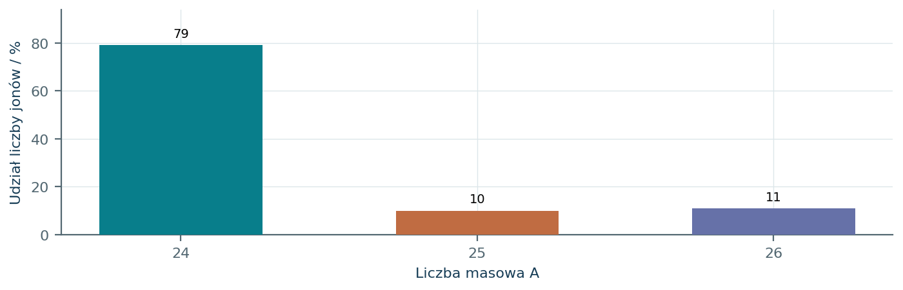
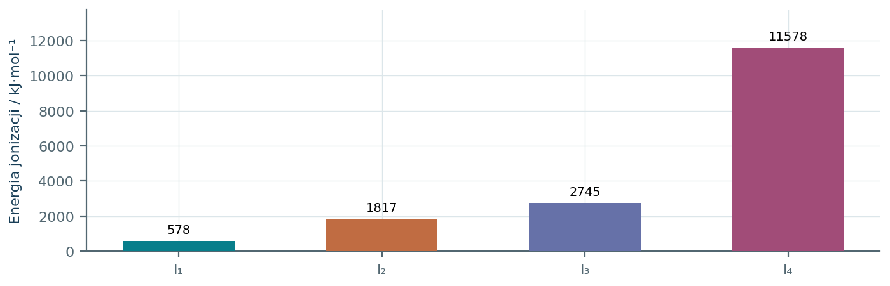
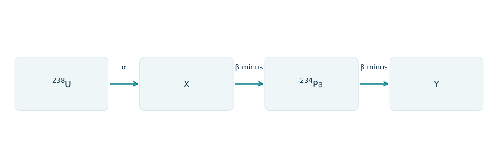
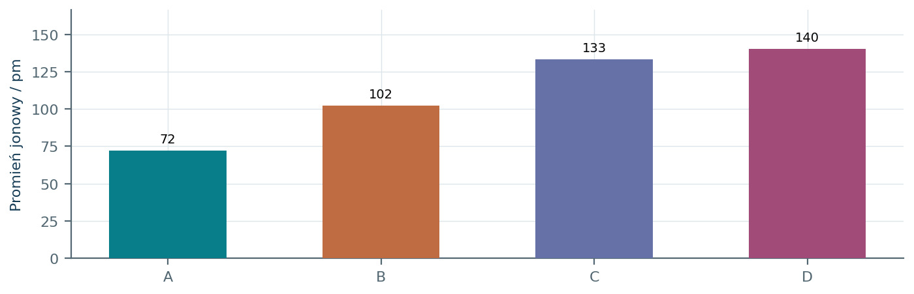
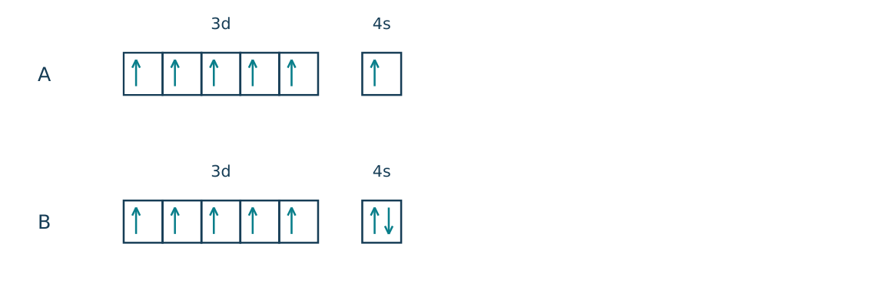
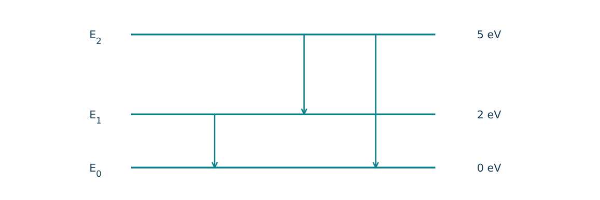
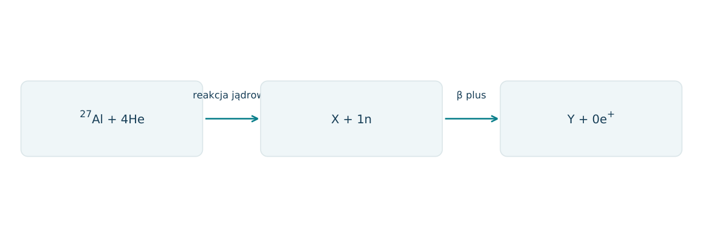
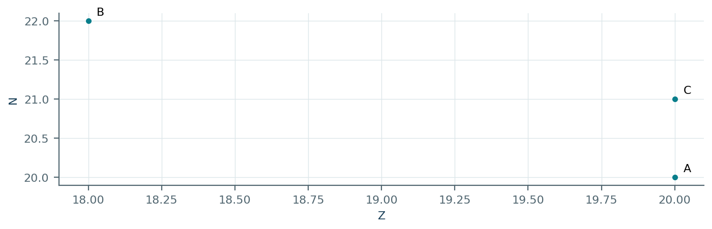
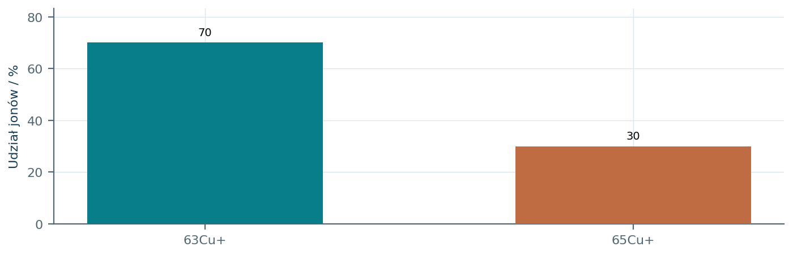

01.01 · 2 pkt
Dla jonu 56Fe3+ (Z = 26) podaj liczby protonów, neutronów i elektronów.
Rozwiązanie
- 26 protonów i 30 neutronów
- 23 elektrony.
50 zadań · 93 pkt · odpowiedzi rozwijane po samodzielnej próbie
← KatalogZadania PDFRozwiązania PDFDane do obliczeń: H 1; C 12; N 14; O 16; Na 23; Mg 24; Al 27; P 31; S 32; Cl 35,5; K 39; Ca 40; Cr 52; Mn 55; Fe 56; Cu 64; Zn 65; Ag 108; Br 80; I 127; Ba 137 (g/mol). NA = 6,02·1023 mol-1. Vm = 22,4 dm3/mol w warunkach normalnych (0°C, 1013 hPa). W 25°C Kw = 10-14. Dane podane w zadaniu mają pierwszeństwo.
Dla jonu 56Fe3+ (Z = 26) podaj liczby protonów, neutronów i elektronów.
Oceń zdania A i B, wpisując P albo F. Każde zdanie fałszywe popraw lub krótko uzasadnij. A: Izotopy jednego pierwiastka mają tę samą liczbę protonów. B: Jon X2- ma o dwa elektrony mniej niż atom X.
Jon X2- ma 18 elektronów. Ustal symbol pierwiastka X.
Dlaczego masa atomowa chloru nie jest całkowitą liczbą masową jednego nuklidu?
Próbka zawiera 75% atomów izotopu o masie 35 u i 25% atomów izotopu o masie 37 u. Oblicz średnią masę atomu.
Pierwiastek ma izotopy o masach 10 u i 11 u. Średnia masa atomu wynosi 10,8 u. Oblicz udział procentowy lżejszego izotopu.
Uzupełnij równanie przemiany α: 238U (Z = 92) → X + 4He (Z = 2). Podaj A i Z produktu X.
Napisz równanie rozpadu β minus 14C (Z = 6). Pomiń antyneutrino.
Jądro 226Ra (Z = 88) przeszło dwie przemiany α i jedną β minus. Ustal A i Z jądra końcowego.
W reakcji 14N + 4He → 17O + X liczby atomowe N, He i O wynoszą odpowiednio 7, 2 i 8. Ustal X.
Podaj dozwolone wartości pobocznej liczby kwantowej dla n = 3.
Rozstrzygnij, czy zestaw n = 2, l = 2, m = 0 opisuje dozwolony stan elektronu. Uzasadnij.
Ile orbitali i maksymalnie ile elektronów mieści podpowłoka 3d?
Podaj możliwe wartości m dla elektronu w podpowłoce p.
Wyjaśnij, dlaczego na jednym orbitalu nie można umieścić dwóch elektronów o takim samym spinie.
Narysuj schemat klatkowy obsadzenia podpowłoki 2p w atomie azotu w stanie podstawowym.
Ile niesparowanych elektronów ma atom tlenu w stanie podstawowym? Odwołaj się do 2p.
Zapisz pełną konfigurację elektronową Mg i skróconą konfigurację Mg2+.
Napisz skróconą konfigurację elektronową atomu chromu w stanie podstawowym.
Napisz skróconą konfigurację elektronową atomu miedzi w stanie podstawowym.
Napisz skrócone konfiguracje Fe2+ i Fe3+ (Z = 26).
Z konfiguracji [Ar] 3d10 4s2 4p3 ustal pierwiastek, okres i grupę.
Atom ma konfigurację [Kr] 5s2. Ustal symbol i blok konfiguracyjny pierwiastka.
Dla Sc (Z = 21) podaj konfigurację skróconą oraz blok układu okresowego.
Uszereguj Na, Mg i Cl według rosnącego promienia atomowego. Wyjaśnij trend w okresie.
Który atom ma większy promień: Li czy K? Uzasadnij liczbą powłok.
Który atom łatwiej oddaje pierwszy elektron: Na czy K? Wyjaśnij.
Uszereguj O2-, F-, Na+, Mg2+ według rosnącego promienia jonowego.
Kolejne energie jonizacji atomu wynoszą 738, 1451 i 7733 kJ/mol. Wskaż liczbę elektronów walencyjnych i prawdopodobną grupę główną. Uzasadnij.
Dla konfiguracji [Ne] 3s1 przewidź typowy jon i stopień utlenienia pierwiastka.
Wskaż błąd: atom siarki w stanie podstawowym ma konfigurację [Ne] 3s2 3p3. Podaj poprawny zapis.
Rozstrzygnij, czy konfiguracja 1s2 2s1 2p1 może opisywać atom Be. Określ jego stan.
Atom X ma trzy zajęte powłoki i pięć elektronów walencyjnych. Ustal X i narysuj obsadzenie jego podpowłoki walencyjnej p.
Podaj liczbę elektronów w podpowłokach d atomu Zn w stanie podstawowym.
Dlaczego jony Na+ i Ne mają takie samo obsadzenie powłok, choć są różnymi indywiduami chemicznymi?
Ile moli elektronów zawiera 0,20 mola jonów Al3+? Przyjmij Z(Al) = 13.
W widmie masowym pierwiastka są dwa sygnały: 63 u o intensywności 69% i 65 u o intensywności 31%. Oblicz średnią masę i wyjaśnij znaczenie intensywności.
Czy w przemianie β minus zmienia się liczba masowa jądra? Uzasadnij zmianą nukleonu.
W reakcji 27Al + 4He → 30P + X podaj X i sprawdź zachowanie ładunku, wiedząc, że Z(Al) = 13, Z(P) = 15.
Atom metalu ma konfigurację [Ar] 3d5 4s2. Podaj symbol, liczbę niesparowanych elektronów i konfigurację jonu M2+.
Każdy numer 41-50 oznacza jedno zadanie główne; podpunkty są oceniane osobno.
Próbkę metalu X przeprowadzono w jony X+ i zarejestrowano widmo masowe. Wykres pokazuje względną liczbę jonów, a nie udziały masowe. Przyjmij masy izotopów równe liczbom masowym i Z(X)=12.

01.41.1 (2 pkt) Oblicz średnią masę atomową X i wskaż pierwiastek.
01.41.2 (1 pkt) Dla najcięższego izotopu podaj liczby protonów, neutronów i elektronów w jonie zarejestrowanym przez aparat.
01.41.3 (1 pkt) Czy usunięcie jednego elektronu zmienia położenie izotopu w układzie okresowym? Uzasadnij.
0,79·24+0,10·25+0,11·26=24,32 u; X to Mg.
12 protonów, 14 neutronów, 11 elektronów.
Nie; położenie pierwiastka określa liczba protonów, która nie ulega zmianie.
Na rysunku pominięto rdzeń [Ne]. Pokazano wszystkie elektrony walencyjne atomów X i Y w stanie podstawowym. Klatki należące do tej samej podpowłoki mają jednakową energię.
01.42.1 (2 pkt) Ustal symbole X i Y, ich grupy oraz liczby niesparowanych elektronów.
01.42.2 (1 pkt) Zapisz konfiguracje X3- oraz Y2-.
01.42.3 (1 pkt) Porównaj promienie tych jonów i uzasadnij różnicę.
X=P, grupa 15, 3 niesparowane; Y=S, grupa 16, 2 niesparowane.
Oba jony mają konfigurację [Ar].
P3- jest większy niż S2-: przy 18 elektronach jądro S przyciąga je silniej, bo ma więcej protonów.
Kolejne energie jonizacji metalu M przedstawiono na wykresie. Atom M ma trzy zajęte powłoki. Po przekroczeniu konfiguracji zamkniętopowłokowej usuwanie następnego elektronu wymaga szczególnie dużej energii.

01.43.1 (2 pkt) Ustal M i zapisz skróconą konfigurację jego typowego kationu.
01.43.2 (1 pkt) Napisz wzór chlorku M i oblicz jego masę molową.
01.43.3 (1 pkt) Wyjaśnij, dlaczego czwarta energia jest znacznie większa od trzeciej.
M=Al; duży skok po trzecim elektronie wskazuje trzy elektrony walencyjne; Al3+: [Ne].
AlCl3; M=27+3·35,5=133,5 g/mol.
Czwarty elektron pochodzi już z wewnętrznej, zamkniętej powłoki jonu Al3+ i jest silnie związany z jądrem.
Na schemacie pozostawiono niektóre oznaczenia produktów i przemian. Liczby atomowe: U=92, Th=90, Pa=91. W przemianie β minus neutron przechodzi w proton, a jądro emituje elektron; pomiń antyneutrino.

01.44.1 (2 pkt) Ustal nuklidy X i Y, podając A oraz Z.
01.44.2 (1 pkt) Zapisz równanie drugiego etapu z bilansem A i Z.
01.44.3 (1 pkt) Porównaj początkową i końcową liczbę neutronów.
X=234Th (A=234, Z 90); Y=234U (A=234, Z 92).
234Th → 234Pa + 0e-; A: 234=234+0, Z: 90=91-1.
238U ma 146 neutronów, 234U ma 142; ubyły cztery neutrony w całym szeregu.
Cztery jony O2-, F-, Na+ i Mg2+ mają po 10 elektronów. Słupki A-D przedstawiają ich promienie w pm. Posłuż się zależnością między ładunkiem jądra a promieniem w szeregu izoelektronowym.

01.45.1 (2 pkt) Przypisz wzory jonów do słupków.
01.45.2 (1 pkt) Wyjaśnij, dlaczego sama jednakowa liczba elektronów nie oznacza jednakowego promienia.
01.45.3 (1 pkt) Podaj pełną konfigurację elektronową jonu D.
A=Mg2+, B=Na+, C=F-, D=O2-.
Jądra mają różne ładunki; większe Z silniej przyciąga tę samą liczbę elektronów.
1s2 2s2 2p6.
Schemat przedstawia walencyjne podpowłoki dwóch atomów o rdzeniu [Ar]. Są to stany podstawowe. Dla metali bloku d podczas tworzenia kationów najpierw usuwa się elektrony podpowłoki 4s.

01.46.1 (2 pkt) Ustal A i B oraz policz wszystkie elektrony niesparowane.
01.46.2 (1 pkt) Zapisz konfigurację B2+ i A3+.
01.46.3 (1 pkt) Wyjaśnij, dlaczego konfiguracji A nie zapisuje się jako [Ar]3d4 4s2.
A=Cr, 6 niesparowanych; B=Mn, 5 niesparowanych.
Mn2+: [Ar]3d5; Cr3+: [Ar]3d3.
Stan podstawowy Cr ma energetycznie korzystne obsadzenie 3d5 4s1; prosta kolejność zapełniania nie opisuje tego wyjątku.
Model atomu obejmuje trzy poziomy energetyczne. Przejściu w dół towarzyszy emisja fotonu o energii równej różnicy poziomów. Korzystaj ze wzoru lambda=1240/E, gdzie E jest w eV, a lambda w nm.

01.47.1 (2 pkt) Wskaż przejście emitujące foton o energii 3 eV i oblicz długość fali.
01.47.2 (1 pkt) Które przejście emisyjne ma najmniejszą długość fali? Uzasadnij.
01.47.3 (1 pkt) Czy atom na E0 może w tym modelu pochłonąć pojedynczy foton 3 eV i przejść na jeden z pokazanych poziomów?
E2→E1; lambda=1240/3≈413 nm.
E2→E0, bo ma największą różnicę energii 5 eV, a lambda jest odwrotnie proporcjonalna do E.
Nie; od E0 dostępne różnice wynoszą 2 i 5 eV, a poziomu 3 eV nie pokazano.
Bombardowanie 27Al cząstkami α prowadzi do jądra X i jednego neutronu. Następnie X rozpada się β plus: jeden proton zmienia się w neutron z emisją pozytonu 0e+; pomiń neutrino. Z: Al13, P15, Si14.

01.48.1 (2 pkt) Wyznacz A i Z jądra X oraz jego symbol.
01.48.2 (1 pkt) Podaj Y i sprawdź bilans ładunku drugiej przemiany.
01.48.3 (1 pkt) Porównaj liczby neutronów w X i Y.
A=27+4-1=30; Z=13+2=15, więc 30P.
Y=30Si; 15=14+1, liczba masowa 30 nie zmienia się.
30P ma 15 neutronów, 30Si ma 16; w β plus liczba neutronów wzrosła o jeden.
Na mapie zaznaczono trzy nuklidy. Oś pozioma oznacza Z, a pionowa N. Liczba masowa jest sumą tych dwóch liczb. Wiadomo, że Z=18 odpowiada Ar, a Z=20 Ca.

01.49.1 (2 pkt) Zapisz symbole nuklidów A-C z liczbami masowymi.
01.49.2 (1 pkt) Wskaż parę izotopów i parę izobarów.
01.49.3 (1 pkt) Próbka Ca zawiera 80% atomów A i 20% C. Oblicz jej średnią masę atomową przy masach 40 i 41 u.
A=40Ca; B=40Ar; C=41Ca.
Izotopy A/C (to samo Z), izobary A/B (to samo A).
0,80·40+0,20·41=40,2 u.
Widmo jonów Cu+ z próbki wzbogaconej izotopowo pokazano na wykresie. Z(Cu)=29. Przy obliczeniach masy przyjmij masy izotopów 63 i 65 u oraz pomiń masę oddanych elektronów.

01.50.1 (2 pkt) Oblicz średnią masę atomową oraz masę 0,200 mola Cu z tej próbki.
01.50.2 (1 pkt) Zapisz skrócone konfiguracje Cu i Cu2+ w stanie podstawowym.
01.50.3 (1 pkt) Czy przekształcenie całej próbki z Cu+ w Cu2+ zmieni stosunek liczby obu izotopów? Uzasadnij.
M=63,6 g/mol; m=0,200·63,6=12,72 g.
Cu: [Ar]3d10 4s1; Cu2+: [Ar]3d9.
Nie, jeżeli przemiana nie jest selektywna izotopowo; zmienia się liczba elektronów, a nie skład jąder.